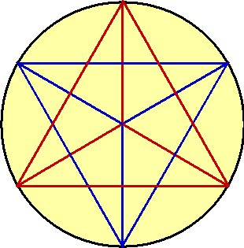
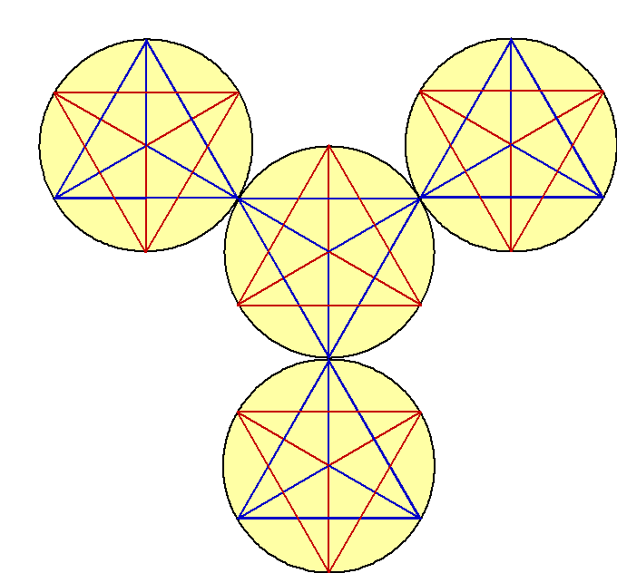
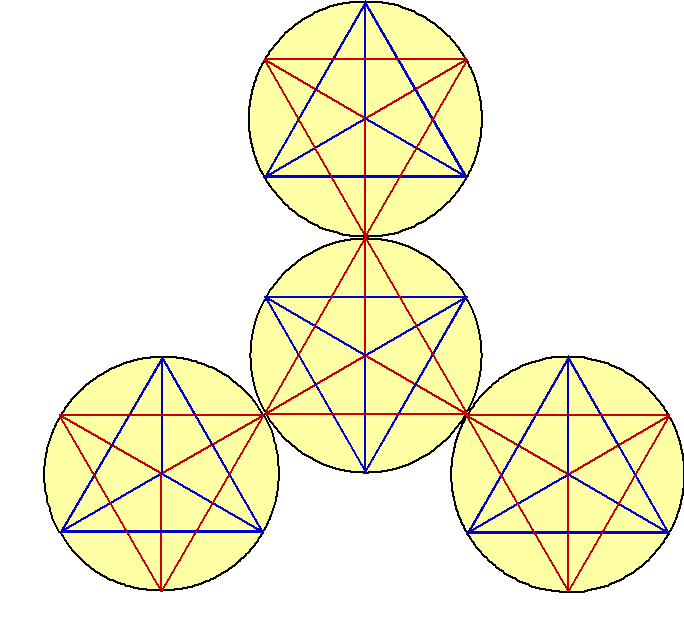
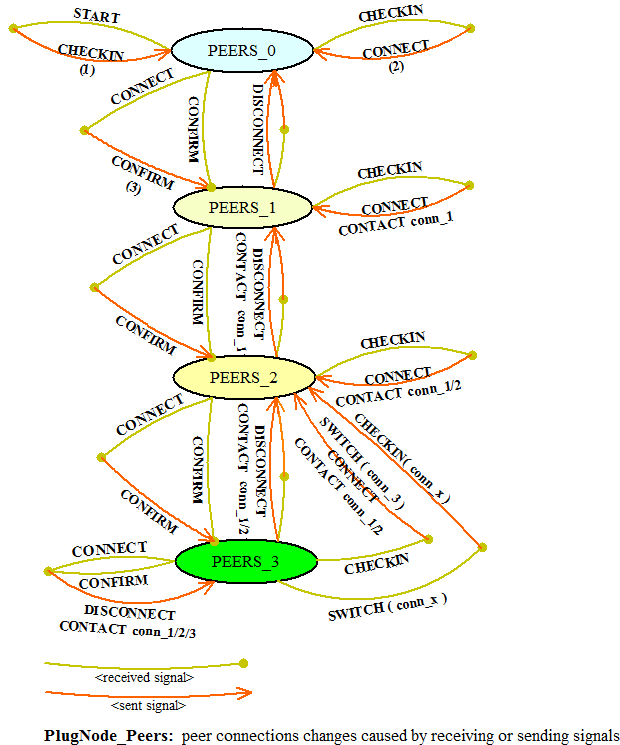
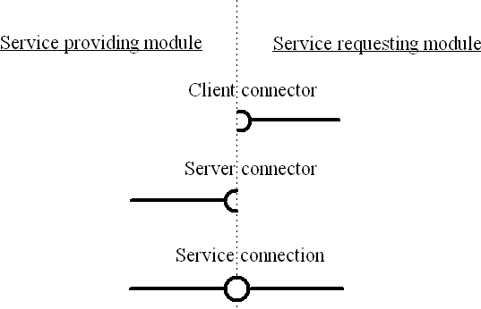
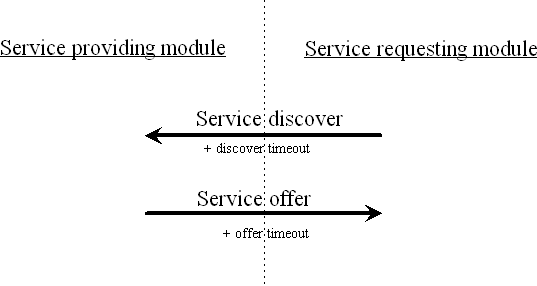
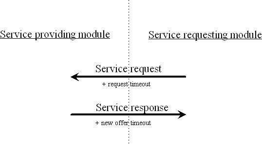
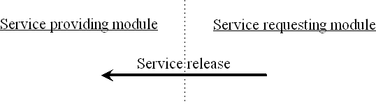
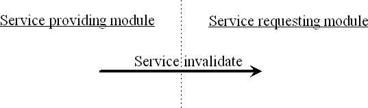

A FTLightNet consists of FTLightNodes that have been designed for obtaining a service (functionality) from other nodes in a network as well as for exposing a service (functionality) inside the network to other nodes. This encompasses network connections to remote program modules (nodes) as well as direct connections based on function pointers to locally available program modules. According to the OSI model, a FTLightNode implements a Service Access Point (SAP).
A program module is understood as an instance of a source program which may be written in an arbitrary programming language and which may follow any programming paradigm. Between many others, an instance of a C++ class could become a program module in the sense of this description at runtime if it has been derived from the FTLightNode class or if it maintains a member variable of that type.
It may be obvious yet should be admitted here that a different instance from the same source program will become a program module of its own and thus it will communicate to other program modules and in particular with those modules that have been created from the same program source.
The basic structure for all communication, remote as well as local messaging, should preferably be based on equilateral pyramids (tetrahedron) in order to accomplish optimal information throughput figures. With that design in mind, a current program module is thought to be in the center of two merged tetrahedrons where one tetrahedron is pointing to the front with one of its edges and the second tetrahedron is pointing to the back with one of its edges.
The following pictures have been drawn to facilitate the understanding of a complex communication structure which results from connecting multiple program modules together in a network. By convention, all remote connections will be represented by blue color and the local connections will be represented by red color.
 |
Any edge of a blue pyramid can be connected to a blue edge of another pyramid in order to communicate to that pyramid's program module. The picture shows in a simplified two-dimensional way how a current program module in the center is connected to multiple other program modules on all of its edges. A fourth connected program module is not shown but will be present either in the front or in the back of the center pyramid.

In analogy to remote communication, a program module can be connected to upto four locally available other program modules directly. Far more than those one plus four FTLightNodes can be connected in a local tetrahedron structure and they will establish a common local messaging group. Once a desired communication peer has been discovered in that local messaging group, a direct and fast connection can be established based on a function pointer. The combination of a flexible messaging structure with the possibility of a direct shortcut provides for an uncompared scalability along with high performance figures.

A network of collaborating FTLightNodes will be generated by creating the FTLightNodes that should belong to the network and by exchanging command messages between those FTLightNodes for creating a messaging structure between them.
| START | - a new FTLightNode is asked to checkin to a network of FTLightNodes | |
| CHECKIN | - a FTLightNode asks another FTLightNode for establishing a connection | |
| CONNECT | - a new connection has been registered and is pending for CONFIRM | |
| CONFIRM | - a registered connection is confirmed and thereby activated | |
| DISCONNECT | - a FTLightNode has shut down a connection | |
| SWITCH | - a FTLightNode asks a peer for switching over to a new FTLightNode | |
| CONTACT | - a FTLightNode informs a new FTLightNode about its current peers |
A FTLightNode's connections will each maintain their unique state dependent on messages that they receive from or send to other FTLightNodes. At any time, each connection will have one of the following states:

Usually, a FTLightNode's connection starts its lifetime with STATE_IDLE. When a CHECKIN message (1) is sent to another FTLightNode then the state changes to STATE_CHECKIN. After a while, the peer FTLightNode should respond with a CONNECT message (2). Then the connection that received that message will respond with a CONFIRM message (3) and will go to STATE_CONFIRM. Before the peer connection received the CONFIRM message it will have a STATE_CONNECT and after receiving that CONFIRM message it will also go to STATE_CONFIRM.
Once both FTLightNodes' connections reached STATE_CONFIRM, a communication channel is open and will be used for any further communication between that couple of peer FTLightNodes.
When a FTLightNode wishes to leave a network, then it first releases all connections by sending a DISCONNECT message to each of its peers. The peer FTLightNodes will deregister the leaving FTLightNode and will change affected connections back to STATE_IDLE after sending as well a DISCONNECT message. The first FTLightNode which initiated the disconnection will temporarily be in STATE_DISCONNECT until it received a DISCONNECT message. Then it will also go to STATE_IDLE. Once all connections of a FTLightNode reached STATE_IDLE, that FTLightNode has successfully left the network and can safely be removed.
A change of FTLightNodes' current network structure is needed whenever a new FTLightNode wishes to join the network by contacting a saturated FTLightNode that maintains already three valid connections. In that case the last (third) connection of that FTLightNode will be cut in favour of establishing two new valid connections from previous peer FTLightNodes (which will be disconnected from each other). The new FTLightNode that wishes to enter the FTLightNodes' network structure will be connected to both FTLightNodes that just cut their connection in order to allow the new FTLightNode to get in to the structure.
A FTLightNode will send a SWITCH command to its peer in order to accomplish described network change. Both of affected peer FTLightNodes' connections will go to STATE_IDLE in the result of a sent/received SWITCH message. Afterwards, the first FTLightNode (that sent the SWITCH message) will send a CONNECT message to the new FTLightNode. The second (previous peer FTLightNode) will start initiating a connection to the arriving new FTLightNode by sending a CHECKIN message to it.
Whenever sending a CONNECT or DISCONNECT message, a FTLightNode will also send CONTACT messages if appropriate. Those CONTACT messages inform the peer FTLightNode about currently available peers. This will allow the peer FTLightNode to establish more connections in order to get to an as complete as possible set of ideally three connections to other FTLightNodes participating in that network.
Whenever one module uses a service from a second module, those modules are said to be connected by aservice connection. In opposite to well known uni-directional service providers like a HTTP server or a local function call, a service connection is a very symmetric setup. The client side will know how to reach the server and the server will know as well about how to reach each client that has subscribed to its service. This symmetry is especially important for a graceful shutdown of a service where all clients have to be informed that the service is no longer available and must not be called any longer. The server will use the client connectors in this case in order to revoke its connector from the clients' list of connectors.

When looking at usual implementations for remote and local services, one will most often find solutions that are based on the assumption that a service provider is available almost all the time. A HTTP server in the Internet is an example that is based on that assumption as well as a common function call in a program is based on the same assumption.
While designing systems based on independent modules, one will become aware that the previous assumption will no longer be valid. Remote modules may shutdown their service while a client is still running as well as a locally available module could stop running while client modules that are connected to it will still continue working. Those roughly described use cases provide to the requirement of a symmetric implementation where each of the two communication partners is allowed to inform the peer about finishing work. The following procedures support such a symmetric approach.
When a client needs a service it will ask the local respectively the remote network of co-workers about a suitable server that is able to provide the wanted service. The client will specify an "inbox" where offers can be sent to. In case of a local service discovery, the "inbox" would be a function pointer which can be called with the offered service's service function as an argument. On the other hand, in case of a remote service the "inbox" would represent an IP address and a port where an information about the offered service's accessibility can be sent to.
Once the client has received one or multiple offers it is said that a temporary service connection has been established. This service connection will be called temporary since either of the service discover and service offer messages will timeout. The timeout value is determined by the sender of the particular message. As long as the service offer timeout has not been reached the service requesting module could decide to accept an offer and would just use the offered service.
A service providing module will be bound to its offer till the end of the self-specified service offer timeout. On the other hand, it can revoke an offer if circumstances demand for it but only as long as the original service discover timeout has not elapsed since only during that period the service requesting module can be safely reached. Therefore, in a usual setup a service providing module would set the service offer timeout before or equal to the service discover timeout since otherwise it would loose the ability to revoke its offer.

While a valid service connection is present, the initiator of that service connection can use the offered service at any time. For doing so, the service requesting module will send out a service request. The service providing module will generate a response and will send it back to the service requesting module but only if the request timeout has not elapsed yet. Otherwise the response will not be send but will be silently discarded.
When sending a response back to the service requesting module the service providing module can decide to extend the offer for a repeated service. In this case a new offer timeout will be sent together with the response. As already described in service arbitration, an offer can be revoked as long as the service requesting module's timeout (request timeout in this case) has not elapsed.

A service connection will stay valid as long as its timeout has not been reached. However, it can be shutdown during its active time from both sides. If a client does not need a service connection any longer it will send a "service release" message to the service provider.

On the other hand, if a server wants to shutdown its service it will send a "service invalidate" message to all peers that still maintain a valid service connection with the service provider at that time.

The range of offered services encompasses everything where one program module may use a service from a second program module. In the following, some samples for those service offers will be given without claiming the listing to be comprehensive.